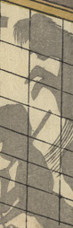

← 图鉴索引

障子に映った幽霊。両腕を前に垂らしている。
出典：親書誌：U426_nichibunken_0331：鯰筆を震；ナマズ フデ オ フルウ／日付：2014／資源識別子：U426_nichibunken_0331_0005_0000
Copyright (c)2010- International Research Center for Japanese Studies, Kyoto, Japan. All rights reserved.